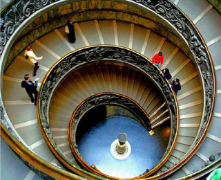

詳しく見る
東京都国立市に位置するこの美術館は、東京にありながらも豊かな自然に囲まれた 静かな環境に佇んでいます。 国立市は美しい桜並木や緑豊かな公園が 点在するエリアであり、美術館もその自然の 一部として訪れる人々を温かく迎えます。
館内では、古典から現代まで幅広い ジャンルのアートを展示しており、 訪れるたびに新たな発見があるのが 魅力です。周囲の自然と融合した 空間設計により、芸術作品を鑑賞しながら 四季折々の風景を楽しむことができます。
Share your photos with the hashtag#Tokoy National Museum of Art
